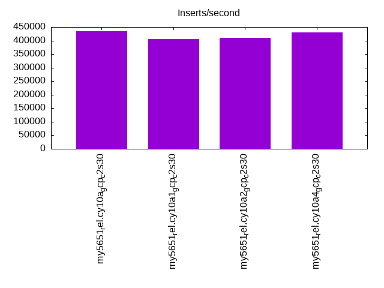
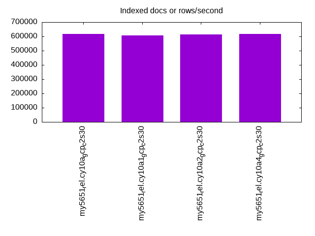
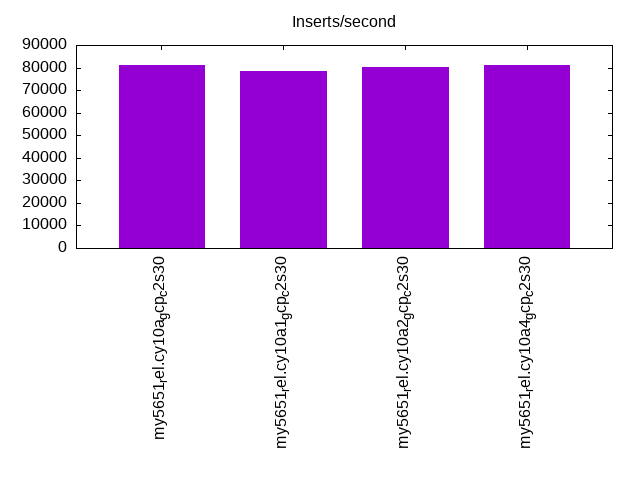
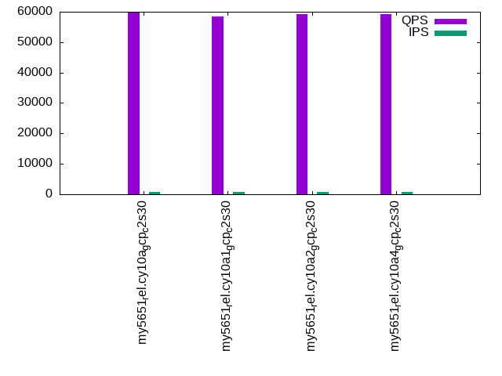
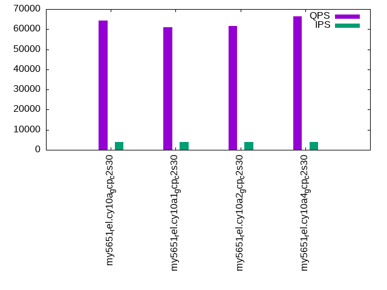
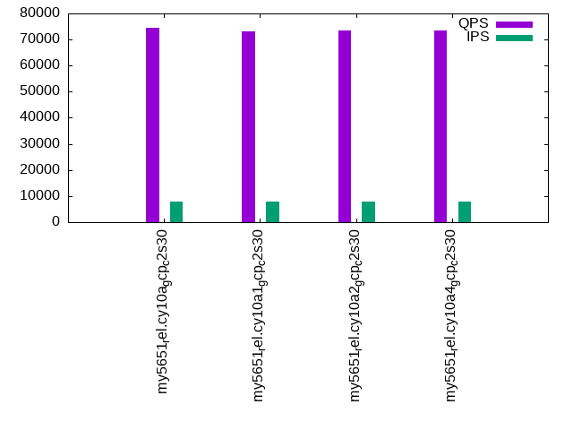

This is a report for the insert benchmark with 160M docs and 8 client(s). It is generated by scripts (bash, awk, sed) and Tufte might not be impressed. An overview of the insert benchmark is here and a short update is here. Below, by DBMS, I mean DBMS+version.config. An example is my8020.c10b40 where my means MySQL, 8020 is version 8.0.20 and c10b40 is the name for the configuration file.
The test server is a c2-standard-30 from GCP with 15 cores, hyperthreads disabled, 120G RAM, XFS + SW RAID 0 on 4 NVMe devices (1.5TB). The benchmark was run with 8 client and there were 1 or 3 connections per client (1 for queries or inserts without rate limits, 1+1 for rate limited inserts+deletes). There are 8 tables, client per table. It loads 160M rows without secondary indexes, creates secondary indexes, then inserts 800M rows with a delete per insert to avoid growing the table. It then does 3 read+write tests for 1800s each that do queries as fast as possible with 100, 500 and then 1000 inserts/second/client concurrent with the queries and 1000 deletes/second to avoid growing the table. The database is cached by InnoDB and the only IO is for writes.
The tested DBMS are:
The numbers are inserts/s for l.i0 and l.i1, indexed docs (or rows) /s for l.x and queries/s for q*.2. The values are the average rate over the entire test for inserts (IPS) and queries (QPS). The range of values for IPS and QPS is split into 3 parts: bottom 25%, middle 50%, top 25%. Values in the bottom 25% have a red background, values in the top 25% have a green background and values in the middle have no color. A gray background is used for values that can be ignored because the DBMS did not sustain the target insert rate. Red backgrounds are not used when the minimum value is within 80% of the max value.
| dbms | l.i0 | l.x | l.i1 | q100.1 | q500.1 | q1000.1 |
|---|---|---|---|---|---|---|
| my5651_rel.cy10a_gcp_c2s30 | 433604 | 618147 | 81202 | 59927 | 64203 | 74452 |
| my5651_rel.cy10a1_gcp_c2s30 | 406091 | 606439 | 78354 | 58526 | 60949 | 73120 |
| my5651_rel.cy10a2_gcp_c2s30 | 410256 | 613410 | 80345 | 59182 | 61604 | 73602 |
| my5651_rel.cy10a4_gcp_c2s30 | 428954 | 618147 | 81045 | 59340 | 66341 | 73473 |
This table has relative throughput, throughput for the DBMS relative to the DBMS in the first line, using the absolute throughput from the previous table. Values less than 0.95 have a yellow background. Values greater than 1.05 have a blue background.
| dbms | l.i0 | l.x | l.i1 | q100.1 | q500.1 | q1000.1 |
|---|---|---|---|---|---|---|
| my5651_rel.cy10a_gcp_c2s30 | 1.00 | 1.00 | 1.00 | 1.00 | 1.00 | 1.00 |
| my5651_rel.cy10a1_gcp_c2s30 | 0.94 | 0.98 | 0.96 | 0.98 | 0.95 | 0.98 |
| my5651_rel.cy10a2_gcp_c2s30 | 0.95 | 0.99 | 0.99 | 0.99 | 0.96 | 0.99 |
| my5651_rel.cy10a4_gcp_c2s30 | 0.99 | 1.00 | 1.00 | 0.99 | 1.03 | 0.99 |
This lists the average rate of inserts/s for the tests that do inserts concurrent with queries. For such tests the query rate is listed in the table above. The read+write tests are setup so that the insert rate should match the target rate every second. Cells that are not at least 95% of the target have a red background to indicate a failure to satisfy the target.
| dbms | q100.1 | q500.1 | q1000.1 |
|---|---|---|---|
| my5651_rel.cy10a_gcp_c2s30 | 783 | 3962 | 7960 |
| my5651_rel.cy10a1_gcp_c2s30 | 778 | 3958 | 7960 |
| my5651_rel.cy10a2_gcp_c2s30 | 783 | 3965 | 7960 |
| my5651_rel.cy10a4_gcp_c2s30 | 773 | 3967 | 7960 |
| target | 800 | 4000 | 8000 |
l.i0: load without secondary indexes. Graphs for performance per 1-second interval are here.
Average throughput:
Insert response time histogram: each cell has the percentage of responses that take <= the time in the header and max is the max response time in seconds. For the max column values in the top 25% of the range have a red background and in the bottom 25% of the range have a green background. The red background is not used when the min value is within 80% of the max value.
| dbms | 256us | 1ms | 4ms | 16ms | 64ms | 256ms | 1s | 4s | 16s | gt | max |
|---|---|---|---|---|---|---|---|---|---|---|---|
| my5651_rel.cy10a_gcp_c2s30 | 2.235 | 97.528 | 0.066 | 0.156 | 0.014 | 0.240 | |||||
| my5651_rel.cy10a1_gcp_c2s30 | 2.187 | 97.528 | 0.096 | 0.167 | 0.021 | 0.001 | 0.521 | ||||
| my5651_rel.cy10a2_gcp_c2s30 | 2.129 | 97.591 | 0.097 | 0.169 | 0.014 | 0.214 | |||||
| my5651_rel.cy10a4_gcp_c2s30 | 2.224 | 97.403 | 0.196 | 0.162 | 0.014 | 0.195 |
Performance metrics for the DBMS listed above. Some are normalized by throughput, others are not. Legend for results is here.
ips qps rps rmbps wps wmbps rpq rkbpq wpi wkbpi csps cpups cspq cpupq dbgb1 dbgb2 rss maxop p50 p99 tag 433604 0 3422 13.4 627.6 79.4 0.008 0.032 0.001 0.188 88654 42.2 0.204 15 10.6 139.1 16.1 0.240 57038 42454 160m.my5651_rel.cy10a_gcp_c2s30 406091 0 3175 12.4 236.6 71.8 0.008 0.031 0.001 0.181 83106 40.6 0.205 15 10.6 139.1 16.1 0.521 52443 40556 160m.my5651_rel.cy10a1_gcp_c2s30 410256 0 3199 12.5 792.4 81.1 0.008 0.031 0.002 0.202 83897 40.9 0.204 15 10.6 139.1 16.1 0.214 52743 42954 160m.my5651_rel.cy10a2_gcp_c2s30 428954 0 3388 13.2 268.5 76.3 0.008 0.032 0.001 0.182 88548 42.6 0.206 15 10.6 139.1 16.1 0.195 55340 44467 160m.my5651_rel.cy10a4_gcp_c2s30
l.x: create secondary indexes.
Average throughput:
Performance metrics for the DBMS listed above. Some are normalized by throughput, others are not. Legend for results is here.
ips qps rps rmbps wps wmbps rpq rkbpq wpi wkbpi csps cpups cspq cpupq dbgb1 dbgb2 rss maxop p50 p99 tag 618147 0 310 1.2 7973.7 647.5 0.001 0.002 0.013 1.073 19056 37.5 0.031 9 21.7 150.2 27.4 0.001 NA NA 160m.my5651_rel.cy10a_gcp_c2s30 606439 0 262 1.0 2835.0 612.1 0.000 0.002 0.005 1.034 12910 37.9 0.021 9 21.7 150.2 27.4 0.001 NA NA 160m.my5651_rel.cy10a1_gcp_c2s30 613410 0 349 1.4 7948.0 637.9 0.001 0.002 0.013 1.065 19857 38.7 0.032 9 21.7 150.2 27.4 0.001 NA NA 160m.my5651_rel.cy10a2_gcp_c2s30 618147 0 279 1.1 3352.6 633.1 0.000 0.002 0.005 1.049 28703 39.9 0.046 10 21.7 150.2 27.4 0.002 NA NA 160m.my5651_rel.cy10a4_gcp_c2s30
l.i1: continue load after secondary indexes created. Graphs for performance per 1-second interval are here.
Average throughput:
Insert response time histogram: each cell has the percentage of responses that take <= the time in the header and max is the max response time in seconds. For the max column values in the top 25% of the range have a red background and in the bottom 25% of the range have a green background. The red background is not used when the min value is within 80% of the max value.
| dbms | 256us | 1ms | 4ms | 16ms | 64ms | 256ms | 1s | 4s | 16s | gt | max |
|---|---|---|---|---|---|---|---|---|---|---|---|
| my5651_rel.cy10a_gcp_c2s30 | nonzero | 29.748 | 69.655 | 0.578 | 0.019 | nonzero | 0.456 | ||||
| my5651_rel.cy10a1_gcp_c2s30 | nonzero | 22.824 | 76.670 | 0.487 | 0.018 | 0.205 | |||||
| my5651_rel.cy10a2_gcp_c2s30 | 27.444 | 72.075 | 0.464 | 0.017 | nonzero | 0.394 | |||||
| my5651_rel.cy10a4_gcp_c2s30 | nonzero | 29.822 | 69.707 | 0.454 | 0.018 | nonzero | 0.289 |
Delete response time histogram: each cell has the percentage of responses that take <= the time in the header and max is the max response time in seconds. For the max column values in the top 25% of the range have a red background and in the bottom 25% of the range have a green background. The red background is not used when the min value is within 80% of the max value.
| dbms | 256us | 1ms | 4ms | 16ms | 64ms | 256ms | 1s | 4s | 16s | gt | max |
|---|---|---|---|---|---|---|---|---|---|---|---|
| my5651_rel.cy10a_gcp_c2s30 | 0.002 | 55.074 | 44.406 | 0.501 | 0.016 | 0.001 | 0.462 | ||||
| my5651_rel.cy10a1_gcp_c2s30 | nonzero | 46.850 | 52.707 | 0.428 | 0.015 | 0.242 | |||||
| my5651_rel.cy10a2_gcp_c2s30 | 0.001 | 51.160 | 48.416 | 0.409 | 0.014 | nonzero | 0.394 | ||||
| my5651_rel.cy10a4_gcp_c2s30 | 0.003 | 56.076 | 43.523 | 0.380 | 0.018 | 0.227 |
Performance metrics for the DBMS listed above. Some are normalized by throughput, others are not. Legend for results is here.
ips qps rps rmbps wps wmbps rpq rkbpq wpi wkbpi csps cpups cspq cpupq dbgb1 dbgb2 rss maxop p50 p99 tag 81202 0 2640 12.6 4393.5 167.4 0.033 0.159 0.054 2.111 171699 62.0 2.114 115 94.0 251.9 85.7 0.456 10389 6793 160m.my5651_rel.cy10a_gcp_c2s30 78354 0 2517 12.4 3329.0 162.1 0.032 0.163 0.042 2.119 167411 61.0 2.137 117 95.8 254.7 85.7 0.205 9989 7492 160m.my5651_rel.cy10a1_gcp_c2s30 80345 0 2617 12.7 5582.0 203.0 0.033 0.162 0.069 2.588 171340 62.6 2.133 117 95.6 254.4 85.7 0.394 10239 7692 160m.my5651_rel.cy10a2_gcp_c2s30 81045 0 2460 12.4 3498.8 162.7 0.030 0.157 0.043 2.056 171617 62.9 2.118 116 93.8 251.7 85.7 0.289 10289 8241 160m.my5651_rel.cy10a4_gcp_c2s30
q100.1: range queries with 100 insert/s per client. Graphs for performance per 1-second interval are here.
Average throughput:
Query response time histogram: each cell has the percentage of responses that take <= the time in the header and max is the max response time in seconds. For max values in the top 25% of the range have a red background and in the bottom 25% of the range have a green background. The red background is not used when the min value is within 80% of the max value.
| dbms | 256us | 1ms | 4ms | 16ms | 64ms | 256ms | 1s | 4s | 16s | gt | max |
|---|---|---|---|---|---|---|---|---|---|---|---|
| my5651_rel.cy10a_gcp_c2s30 | 99.706 | 0.234 | 0.056 | 0.005 | nonzero | nonzero | 0.084 | ||||
| my5651_rel.cy10a1_gcp_c2s30 | 99.632 | 0.309 | 0.054 | 0.005 | nonzero | nonzero | 0.087 | ||||
| my5651_rel.cy10a2_gcp_c2s30 | 99.656 | 0.283 | 0.056 | 0.005 | nonzero | nonzero | 0.084 | ||||
| my5651_rel.cy10a4_gcp_c2s30 | 99.583 | 0.297 | 0.107 | 0.014 | nonzero | nonzero | 0.175 |
Insert response time histogram: each cell has the percentage of responses that take <= the time in the header and max is the max response time in seconds. For max values in the top 25% of the range have a red background and in the bottom 25% of the range have a green background. The red background is not used when the min value is within 80% of the max value.
| dbms | 256us | 1ms | 4ms | 16ms | 64ms | 256ms | 1s | 4s | 16s | gt | max |
|---|---|---|---|---|---|---|---|---|---|---|---|
| my5651_rel.cy10a_gcp_c2s30 | 87.983 | 11.920 | 0.097 | 0.037 | |||||||
| my5651_rel.cy10a1_gcp_c2s30 | 80.038 | 19.938 | 0.024 | 0.027 | |||||||
| my5651_rel.cy10a2_gcp_c2s30 | 83.375 | 16.604 | 0.021 | 0.028 | |||||||
| my5651_rel.cy10a4_gcp_c2s30 | 85.351 | 14.632 | 0.017 | 0.018 |
Delete response time histogram: each cell has the percentage of responses that take <= the time in the header and max is the max response time in seconds. For max values in the top 25% of the range have a red background and in the bottom 25% of the range have a green background. The red background is not used when the min value is within 80% of the max value.
| dbms | 256us | 1ms | 4ms | 16ms | 64ms | 256ms | 1s | 4s | 16s | gt | max |
|---|---|---|---|---|---|---|---|---|---|---|---|
| my5651_rel.cy10a_gcp_c2s30 | 0.205 | 90.292 | 9.410 | 0.094 | 0.036 | ||||||
| my5651_rel.cy10a1_gcp_c2s30 | 0.094 | 84.878 | 15.014 | 0.014 | 0.022 | ||||||
| my5651_rel.cy10a2_gcp_c2s30 | 0.101 | 86.434 | 13.444 | 0.021 | 0.032 | ||||||
| my5651_rel.cy10a4_gcp_c2s30 | 0.017 | 90.188 | 9.788 | 0.007 | 0.024 |
Performance metrics for the DBMS listed above. Some are normalized by throughput, others are not. Legend for results is here.
ips qps rps rmbps wps wmbps rpq rkbpq wpi wkbpi csps cpups cspq cpupq dbgb1 dbgb2 rss maxop p50 p99 tag 783 59927 1728 26.6 3748.0 116.8 0.029 0.454 4.789 152.802 209424 69.1 3.495 173 94.0 251.9 85.7 0.084 7672 7339 160m.my5651_rel.cy10a_gcp_c2s30 778 58526 1134 28.2 3352.0 116.8 0.019 0.493 4.307 153.668 203506 69.2 3.477 177 95.8 254.7 85.8 0.087 7512 7128 160m.my5651_rel.cy10a1_gcp_c2s30 783 59182 1841 28.4 4154.1 130.0 0.031 0.491 5.303 169.941 207905 69.4 3.513 176 95.6 254.4 85.7 0.084 7560 7211 160m.my5651_rel.cy10a2_gcp_c2s30 773 59340 235 25.8 3456.0 126.5 0.004 0.446 4.472 167.563 204691 70.6 3.449 178 93.8 251.7 85.7 0.175 7655 6553 160m.my5651_rel.cy10a4_gcp_c2s30
q500.1: range queries with 500 insert/s per client. Graphs for performance per 1-second interval are here.
Average throughput:
Query response time histogram: each cell has the percentage of responses that take <= the time in the header and max is the max response time in seconds. For max values in the top 25% of the range have a red background and in the bottom 25% of the range have a green background. The red background is not used when the min value is within 80% of the max value.
| dbms | 256us | 1ms | 4ms | 16ms | 64ms | 256ms | 1s | 4s | 16s | gt | max |
|---|---|---|---|---|---|---|---|---|---|---|---|
| my5651_rel.cy10a_gcp_c2s30 | 99.626 | 0.294 | 0.073 | 0.008 | nonzero | nonzero | 0.078 | ||||
| my5651_rel.cy10a1_gcp_c2s30 | 99.535 | 0.373 | 0.079 | 0.013 | nonzero | nonzero | 0.127 | ||||
| my5651_rel.cy10a2_gcp_c2s30 | 99.576 | 0.335 | 0.077 | 0.011 | nonzero | 0.016 | |||||
| my5651_rel.cy10a4_gcp_c2s30 | 99.641 | 0.287 | 0.063 | 0.009 | nonzero | 0.019 |
Insert response time histogram: each cell has the percentage of responses that take <= the time in the header and max is the max response time in seconds. For max values in the top 25% of the range have a red background and in the bottom 25% of the range have a green background. The red background is not used when the min value is within 80% of the max value.
| dbms | 256us | 1ms | 4ms | 16ms | 64ms | 256ms | 1s | 4s | 16s | gt | max |
|---|---|---|---|---|---|---|---|---|---|---|---|
| my5651_rel.cy10a_gcp_c2s30 | 0.026 | 96.237 | 3.662 | 0.074 | 0.058 | ||||||
| my5651_rel.cy10a1_gcp_c2s30 | 0.010 | 94.485 | 5.446 | 0.057 | 0.001 | 0.085 | |||||
| my5651_rel.cy10a2_gcp_c2s30 | 0.015 | 96.233 | 3.739 | 0.013 | 0.033 | ||||||
| my5651_rel.cy10a4_gcp_c2s30 | 0.025 | 93.793 | 6.163 | 0.019 | 0.027 |
Delete response time histogram: each cell has the percentage of responses that take <= the time in the header and max is the max response time in seconds. For max values in the top 25% of the range have a red background and in the bottom 25% of the range have a green background. The red background is not used when the min value is within 80% of the max value.
| dbms | 256us | 1ms | 4ms | 16ms | 64ms | 256ms | 1s | 4s | 16s | gt | max |
|---|---|---|---|---|---|---|---|---|---|---|---|
| my5651_rel.cy10a_gcp_c2s30 | 0.751 | 96.558 | 2.624 | 0.067 | 0.054 | ||||||
| my5651_rel.cy10a1_gcp_c2s30 | 0.351 | 96.122 | 3.481 | 0.045 | 0.001 | 0.084 | |||||
| my5651_rel.cy10a2_gcp_c2s30 | 0.560 | 96.884 | 2.546 | 0.010 | 0.042 | ||||||
| my5651_rel.cy10a4_gcp_c2s30 | 0.360 | 96.515 | 3.113 | 0.011 | 0.026 |
Performance metrics for the DBMS listed above. Some are normalized by throughput, others are not. Legend for results is here.
ips qps rps rmbps wps wmbps rpq rkbpq wpi wkbpi csps cpups cspq cpupq dbgb1 dbgb2 rss maxop p50 p99 tag 3962 64203 1070 15.1 3703.6 122.9 0.017 0.241 0.935 31.753 220353 69.2 3.432 162 94.0 251.9 85.7 0.078 8007 7384 160m.my5651_rel.cy10a_gcp_c2s30 3958 60949 744 15.5 3134.0 126.3 0.012 0.260 0.792 32.667 206874 70.5 3.394 174 95.8 254.7 85.7 0.127 7687 7128 160m.my5651_rel.cy10a1_gcp_c2s30 3965 61604 1136 16.1 4686.5 153.6 0.018 0.267 1.182 39.673 210891 70.5 3.423 172 95.6 254.4 85.7 0.016 7767 7256 160m.my5651_rel.cy10a2_gcp_c2s30 3967 66341 229 10.5 2660.2 102.6 0.003 0.162 0.671 26.475 233977 67.1 3.527 152 93.8 251.7 85.7 0.019 8087 7371 160m.my5651_rel.cy10a4_gcp_c2s30
q1000.1: range queries with 1000 insert/s per client. Graphs for performance per 1-second interval are here.
Average throughput:
Query response time histogram: each cell has the percentage of responses that take <= the time in the header and max is the max response time in seconds. For max values in the top 25% of the range have a red background and in the bottom 25% of the range have a green background. The red background is not used when the min value is within 80% of the max value.
| dbms | 256us | 1ms | 4ms | 16ms | 64ms | 256ms | 1s | 4s | 16s | gt | max |
|---|---|---|---|---|---|---|---|---|---|---|---|
| my5651_rel.cy10a_gcp_c2s30 | 99.508 | 0.441 | 0.046 | 0.004 | nonzero | 0.031 | |||||
| my5651_rel.cy10a1_gcp_c2s30 | 99.448 | 0.497 | 0.050 | 0.005 | nonzero | nonzero | 0.112 | ||||
| my5651_rel.cy10a2_gcp_c2s30 | 99.479 | 0.466 | 0.049 | 0.005 | nonzero | 0.018 | |||||
| my5651_rel.cy10a4_gcp_c2s30 | 99.530 | 0.419 | 0.045 | 0.006 | nonzero | 0.030 |
Insert response time histogram: each cell has the percentage of responses that take <= the time in the header and max is the max response time in seconds. For max values in the top 25% of the range have a red background and in the bottom 25% of the range have a green background. The red background is not used when the min value is within 80% of the max value.
| dbms | 256us | 1ms | 4ms | 16ms | 64ms | 256ms | 1s | 4s | 16s | gt | max |
|---|---|---|---|---|---|---|---|---|---|---|---|
| my5651_rel.cy10a_gcp_c2s30 | 0.001 | 46.743 | 52.613 | 0.643 | 0.034 | ||||||
| my5651_rel.cy10a1_gcp_c2s30 | 41.917 | 57.175 | 0.907 | 0.001 | 0.119 | ||||||
| my5651_rel.cy10a2_gcp_c2s30 | 0.001 | 43.645 | 55.619 | 0.735 | 0.034 | ||||||
| my5651_rel.cy10a4_gcp_c2s30 | 0.051 | 56.453 | 42.852 | 0.643 | 0.040 |
Delete response time histogram: each cell has the percentage of responses that take <= the time in the header and max is the max response time in seconds. For max values in the top 25% of the range have a red background and in the bottom 25% of the range have a green background. The red background is not used when the min value is within 80% of the max value.
| dbms | 256us | 1ms | 4ms | 16ms | 64ms | 256ms | 1s | 4s | 16s | gt | max |
|---|---|---|---|---|---|---|---|---|---|---|---|
| my5651_rel.cy10a_gcp_c2s30 | 0.022 | 54.626 | 44.981 | 0.372 | 0.033 | ||||||
| my5651_rel.cy10a1_gcp_c2s30 | 0.013 | 49.381 | 50.070 | 0.535 | 0.001 | 0.121 | |||||
| my5651_rel.cy10a2_gcp_c2s30 | 0.018 | 50.907 | 48.650 | 0.424 | 0.033 | ||||||
| my5651_rel.cy10a4_gcp_c2s30 | 0.540 | 67.289 | 31.883 | 0.287 | 0.035 |
Performance metrics for the DBMS listed above. Some are normalized by throughput, others are not. Legend for results is here.
ips qps rps rmbps wps wmbps rpq rkbpq wpi wkbpi csps cpups cspq cpupq dbgb1 dbgb2 rss maxop p50 p99 tag 7960 74452 334 2.5 1410.6 45.8 0.004 0.035 0.177 5.889 285371 57.3 3.833 115 94.0 251.9 85.7 0.031 9366 9030 160m.my5651_rel.cy10a_gcp_c2s30 7960 73120 336 2.6 1202.5 50.5 0.005 0.036 0.151 6.501 281105 57.5 3.844 118 95.8 254.7 85.7 0.112 9286 8599 160m.my5651_rel.cy10a1_gcp_c2s30 7960 73602 332 2.5 1221.8 40.1 0.005 0.035 0.153 5.165 282278 57.4 3.835 117 95.6 254.4 85.7 0.018 9286 9046 160m.my5651_rel.cy10a2_gcp_c2s30 7960 73473 325 2.8 1025.1 45.8 0.004 0.039 0.129 5.898 283701 57.5 3.861 117 93.8 251.7 85.7 0.030 9302 8567 160m.my5651_rel.cy10a4_gcp_c2s30
l.i0: load without secondary indexes
Performance metrics for all DBMS, not just the ones listed above. Some are normalized by throughput, others are not. Legend for results is here.
ips qps rps rmbps wps wmbps rpq rkbpq wpi wkbpi csps cpups cspq cpupq dbgb1 dbgb2 rss maxop p50 p99 tag 433604 0 3422 13.4 627.6 79.4 0.008 0.032 0.001 0.188 88654 42.2 0.204 15 10.6 139.1 16.1 0.240 57038 42454 160m.my5651_rel.cy10a_gcp_c2s30 406091 0 3175 12.4 236.6 71.8 0.008 0.031 0.001 0.181 83106 40.6 0.205 15 10.6 139.1 16.1 0.521 52443 40556 160m.my5651_rel.cy10a1_gcp_c2s30 410256 0 3199 12.5 792.4 81.1 0.008 0.031 0.002 0.202 83897 40.9 0.204 15 10.6 139.1 16.1 0.214 52743 42954 160m.my5651_rel.cy10a2_gcp_c2s30 428954 0 3388 13.2 268.5 76.3 0.008 0.032 0.001 0.182 88548 42.6 0.206 15 10.6 139.1 16.1 0.195 55340 44467 160m.my5651_rel.cy10a4_gcp_c2s30
l.x: create secondary indexes
Performance metrics for all DBMS, not just the ones listed above. Some are normalized by throughput, others are not. Legend for results is here.
ips qps rps rmbps wps wmbps rpq rkbpq wpi wkbpi csps cpups cspq cpupq dbgb1 dbgb2 rss maxop p50 p99 tag 618147 0 310 1.2 7973.7 647.5 0.001 0.002 0.013 1.073 19056 37.5 0.031 9 21.7 150.2 27.4 0.001 NA NA 160m.my5651_rel.cy10a_gcp_c2s30 606439 0 262 1.0 2835.0 612.1 0.000 0.002 0.005 1.034 12910 37.9 0.021 9 21.7 150.2 27.4 0.001 NA NA 160m.my5651_rel.cy10a1_gcp_c2s30 613410 0 349 1.4 7948.0 637.9 0.001 0.002 0.013 1.065 19857 38.7 0.032 9 21.7 150.2 27.4 0.001 NA NA 160m.my5651_rel.cy10a2_gcp_c2s30 618147 0 279 1.1 3352.6 633.1 0.000 0.002 0.005 1.049 28703 39.9 0.046 10 21.7 150.2 27.4 0.002 NA NA 160m.my5651_rel.cy10a4_gcp_c2s30
l.i1: continue load after secondary indexes created
Performance metrics for all DBMS, not just the ones listed above. Some are normalized by throughput, others are not. Legend for results is here.
ips qps rps rmbps wps wmbps rpq rkbpq wpi wkbpi csps cpups cspq cpupq dbgb1 dbgb2 rss maxop p50 p99 tag 81202 0 2640 12.6 4393.5 167.4 0.033 0.159 0.054 2.111 171699 62.0 2.114 115 94.0 251.9 85.7 0.456 10389 6793 160m.my5651_rel.cy10a_gcp_c2s30 78354 0 2517 12.4 3329.0 162.1 0.032 0.163 0.042 2.119 167411 61.0 2.137 117 95.8 254.7 85.7 0.205 9989 7492 160m.my5651_rel.cy10a1_gcp_c2s30 80345 0 2617 12.7 5582.0 203.0 0.033 0.162 0.069 2.588 171340 62.6 2.133 117 95.6 254.4 85.7 0.394 10239 7692 160m.my5651_rel.cy10a2_gcp_c2s30 81045 0 2460 12.4 3498.8 162.7 0.030 0.157 0.043 2.056 171617 62.9 2.118 116 93.8 251.7 85.7 0.289 10289 8241 160m.my5651_rel.cy10a4_gcp_c2s30
q100.1: range queries with 100 insert/s per client
Performance metrics for all DBMS, not just the ones listed above. Some are normalized by throughput, others are not. Legend for results is here.
ips qps rps rmbps wps wmbps rpq rkbpq wpi wkbpi csps cpups cspq cpupq dbgb1 dbgb2 rss maxop p50 p99 tag 783 59927 1728 26.6 3748.0 116.8 0.029 0.454 4.789 152.802 209424 69.1 3.495 173 94.0 251.9 85.7 0.084 7672 7339 160m.my5651_rel.cy10a_gcp_c2s30 778 58526 1134 28.2 3352.0 116.8 0.019 0.493 4.307 153.668 203506 69.2 3.477 177 95.8 254.7 85.8 0.087 7512 7128 160m.my5651_rel.cy10a1_gcp_c2s30 783 59182 1841 28.4 4154.1 130.0 0.031 0.491 5.303 169.941 207905 69.4 3.513 176 95.6 254.4 85.7 0.084 7560 7211 160m.my5651_rel.cy10a2_gcp_c2s30 773 59340 235 25.8 3456.0 126.5 0.004 0.446 4.472 167.563 204691 70.6 3.449 178 93.8 251.7 85.7 0.175 7655 6553 160m.my5651_rel.cy10a4_gcp_c2s30
q500.1: range queries with 500 insert/s per client
Performance metrics for all DBMS, not just the ones listed above. Some are normalized by throughput, others are not. Legend for results is here.
ips qps rps rmbps wps wmbps rpq rkbpq wpi wkbpi csps cpups cspq cpupq dbgb1 dbgb2 rss maxop p50 p99 tag 3962 64203 1070 15.1 3703.6 122.9 0.017 0.241 0.935 31.753 220353 69.2 3.432 162 94.0 251.9 85.7 0.078 8007 7384 160m.my5651_rel.cy10a_gcp_c2s30 3958 60949 744 15.5 3134.0 126.3 0.012 0.260 0.792 32.667 206874 70.5 3.394 174 95.8 254.7 85.7 0.127 7687 7128 160m.my5651_rel.cy10a1_gcp_c2s30 3965 61604 1136 16.1 4686.5 153.6 0.018 0.267 1.182 39.673 210891 70.5 3.423 172 95.6 254.4 85.7 0.016 7767 7256 160m.my5651_rel.cy10a2_gcp_c2s30 3967 66341 229 10.5 2660.2 102.6 0.003 0.162 0.671 26.475 233977 67.1 3.527 152 93.8 251.7 85.7 0.019 8087 7371 160m.my5651_rel.cy10a4_gcp_c2s30
q1000.1: range queries with 1000 insert/s per client
Performance metrics for all DBMS, not just the ones listed above. Some are normalized by throughput, others are not. Legend for results is here.
ips qps rps rmbps wps wmbps rpq rkbpq wpi wkbpi csps cpups cspq cpupq dbgb1 dbgb2 rss maxop p50 p99 tag 7960 74452 334 2.5 1410.6 45.8 0.004 0.035 0.177 5.889 285371 57.3 3.833 115 94.0 251.9 85.7 0.031 9366 9030 160m.my5651_rel.cy10a_gcp_c2s30 7960 73120 336 2.6 1202.5 50.5 0.005 0.036 0.151 6.501 281105 57.5 3.844 118 95.8 254.7 85.7 0.112 9286 8599 160m.my5651_rel.cy10a1_gcp_c2s30 7960 73602 332 2.5 1221.8 40.1 0.005 0.035 0.153 5.165 282278 57.4 3.835 117 95.6 254.4 85.7 0.018 9286 9046 160m.my5651_rel.cy10a2_gcp_c2s30 7960 73473 325 2.8 1025.1 45.8 0.004 0.039 0.129 5.898 283701 57.5 3.861 117 93.8 251.7 85.7 0.030 9302 8567 160m.my5651_rel.cy10a4_gcp_c2s30
Insert response time histogram
256us 1ms 4ms 16ms 64ms 256ms 1s 4s 16s gt max tag 0.000 2.235 97.528 0.066 0.156 0.014 0.000 0.000 0.000 0.000 0.240 my5651_rel.cy10a_gcp_c2s30 0.000 2.187 97.528 0.096 0.167 0.021 0.001 0.000 0.000 0.000 0.521 my5651_rel.cy10a1_gcp_c2s30 0.000 2.129 97.591 0.097 0.169 0.014 0.000 0.000 0.000 0.000 0.214 my5651_rel.cy10a2_gcp_c2s30 0.000 2.224 97.403 0.196 0.162 0.014 0.000 0.000 0.000 0.000 0.195 my5651_rel.cy10a4_gcp_c2s30
TODO - determine whether there is data for create index response time
Insert response time histogram
256us 1ms 4ms 16ms 64ms 256ms 1s 4s 16s gt max tag 0.000 nonzero 29.748 69.655 0.578 0.019 nonzero 0.000 0.000 0.000 0.456 my5651_rel.cy10a_gcp_c2s30 0.000 nonzero 22.824 76.670 0.487 0.018 0.000 0.000 0.000 0.000 0.205 my5651_rel.cy10a1_gcp_c2s30 0.000 0.000 27.444 72.075 0.464 0.017 nonzero 0.000 0.000 0.000 0.394 my5651_rel.cy10a2_gcp_c2s30 0.000 nonzero 29.822 69.707 0.454 0.018 nonzero 0.000 0.000 0.000 0.289 my5651_rel.cy10a4_gcp_c2s30
Delete response time histogram
256us 1ms 4ms 16ms 64ms 256ms 1s 4s 16s gt max tag 0.000 0.002 55.074 44.406 0.501 0.016 0.001 0.000 0.000 0.000 0.462 my5651_rel.cy10a_gcp_c2s30 0.000 nonzero 46.850 52.707 0.428 0.015 0.000 0.000 0.000 0.000 0.242 my5651_rel.cy10a1_gcp_c2s30 0.000 0.001 51.160 48.416 0.409 0.014 nonzero 0.000 0.000 0.000 0.394 my5651_rel.cy10a2_gcp_c2s30 0.000 0.003 56.076 43.523 0.380 0.018 0.000 0.000 0.000 0.000 0.227 my5651_rel.cy10a4_gcp_c2s30
Query response time histogram
256us 1ms 4ms 16ms 64ms 256ms 1s 4s 16s gt max tag 99.706 0.234 0.056 0.005 nonzero nonzero 0.000 0.000 0.000 0.000 0.084 my5651_rel.cy10a_gcp_c2s30 99.632 0.309 0.054 0.005 nonzero nonzero 0.000 0.000 0.000 0.000 0.087 my5651_rel.cy10a1_gcp_c2s30 99.656 0.283 0.056 0.005 nonzero nonzero 0.000 0.000 0.000 0.000 0.084 my5651_rel.cy10a2_gcp_c2s30 99.583 0.297 0.107 0.014 nonzero nonzero 0.000 0.000 0.000 0.000 0.175 my5651_rel.cy10a4_gcp_c2s30
Insert response time histogram
256us 1ms 4ms 16ms 64ms 256ms 1s 4s 16s gt max tag 0.000 0.000 87.983 11.920 0.097 0.000 0.000 0.000 0.000 0.000 0.037 my5651_rel.cy10a_gcp_c2s30 0.000 0.000 80.038 19.938 0.024 0.000 0.000 0.000 0.000 0.000 0.027 my5651_rel.cy10a1_gcp_c2s30 0.000 0.000 83.375 16.604 0.021 0.000 0.000 0.000 0.000 0.000 0.028 my5651_rel.cy10a2_gcp_c2s30 0.000 0.000 85.351 14.632 0.017 0.000 0.000 0.000 0.000 0.000 0.018 my5651_rel.cy10a4_gcp_c2s30
Delete response time histogram
256us 1ms 4ms 16ms 64ms 256ms 1s 4s 16s gt max tag 0.000 0.205 90.292 9.410 0.094 0.000 0.000 0.000 0.000 0.000 0.036 my5651_rel.cy10a_gcp_c2s30 0.000 0.094 84.878 15.014 0.014 0.000 0.000 0.000 0.000 0.000 0.022 my5651_rel.cy10a1_gcp_c2s30 0.000 0.101 86.434 13.444 0.021 0.000 0.000 0.000 0.000 0.000 0.032 my5651_rel.cy10a2_gcp_c2s30 0.000 0.017 90.188 9.788 0.007 0.000 0.000 0.000 0.000 0.000 0.024 my5651_rel.cy10a4_gcp_c2s30
Query response time histogram
256us 1ms 4ms 16ms 64ms 256ms 1s 4s 16s gt max tag 99.626 0.294 0.073 0.008 nonzero nonzero 0.000 0.000 0.000 0.000 0.078 my5651_rel.cy10a_gcp_c2s30 99.535 0.373 0.079 0.013 nonzero nonzero 0.000 0.000 0.000 0.000 0.127 my5651_rel.cy10a1_gcp_c2s30 99.576 0.335 0.077 0.011 nonzero 0.000 0.000 0.000 0.000 0.000 0.016 my5651_rel.cy10a2_gcp_c2s30 99.641 0.287 0.063 0.009 nonzero 0.000 0.000 0.000 0.000 0.000 0.019 my5651_rel.cy10a4_gcp_c2s30
Insert response time histogram
256us 1ms 4ms 16ms 64ms 256ms 1s 4s 16s gt max tag 0.000 0.026 96.237 3.662 0.074 0.000 0.000 0.000 0.000 0.000 0.058 my5651_rel.cy10a_gcp_c2s30 0.000 0.010 94.485 5.446 0.057 0.001 0.000 0.000 0.000 0.000 0.085 my5651_rel.cy10a1_gcp_c2s30 0.000 0.015 96.233 3.739 0.013 0.000 0.000 0.000 0.000 0.000 0.033 my5651_rel.cy10a2_gcp_c2s30 0.000 0.025 93.793 6.163 0.019 0.000 0.000 0.000 0.000 0.000 0.027 my5651_rel.cy10a4_gcp_c2s30
Delete response time histogram
256us 1ms 4ms 16ms 64ms 256ms 1s 4s 16s gt max tag 0.000 0.751 96.558 2.624 0.067 0.000 0.000 0.000 0.000 0.000 0.054 my5651_rel.cy10a_gcp_c2s30 0.000 0.351 96.122 3.481 0.045 0.001 0.000 0.000 0.000 0.000 0.084 my5651_rel.cy10a1_gcp_c2s30 0.000 0.560 96.884 2.546 0.010 0.000 0.000 0.000 0.000 0.000 0.042 my5651_rel.cy10a2_gcp_c2s30 0.000 0.360 96.515 3.113 0.011 0.000 0.000 0.000 0.000 0.000 0.026 my5651_rel.cy10a4_gcp_c2s30
Query response time histogram
256us 1ms 4ms 16ms 64ms 256ms 1s 4s 16s gt max tag 99.508 0.441 0.046 0.004 nonzero 0.000 0.000 0.000 0.000 0.000 0.031 my5651_rel.cy10a_gcp_c2s30 99.448 0.497 0.050 0.005 nonzero nonzero 0.000 0.000 0.000 0.000 0.112 my5651_rel.cy10a1_gcp_c2s30 99.479 0.466 0.049 0.005 nonzero 0.000 0.000 0.000 0.000 0.000 0.018 my5651_rel.cy10a2_gcp_c2s30 99.530 0.419 0.045 0.006 nonzero 0.000 0.000 0.000 0.000 0.000 0.030 my5651_rel.cy10a4_gcp_c2s30
Insert response time histogram
256us 1ms 4ms 16ms 64ms 256ms 1s 4s 16s gt max tag 0.000 0.001 46.743 52.613 0.643 0.000 0.000 0.000 0.000 0.000 0.034 my5651_rel.cy10a_gcp_c2s30 0.000 0.000 41.917 57.175 0.907 0.001 0.000 0.000 0.000 0.000 0.119 my5651_rel.cy10a1_gcp_c2s30 0.000 0.001 43.645 55.619 0.735 0.000 0.000 0.000 0.000 0.000 0.034 my5651_rel.cy10a2_gcp_c2s30 0.000 0.051 56.453 42.852 0.643 0.000 0.000 0.000 0.000 0.000 0.040 my5651_rel.cy10a4_gcp_c2s30
Delete response time histogram
256us 1ms 4ms 16ms 64ms 256ms 1s 4s 16s gt max tag 0.000 0.022 54.626 44.981 0.372 0.000 0.000 0.000 0.000 0.000 0.033 my5651_rel.cy10a_gcp_c2s30 0.000 0.013 49.381 50.070 0.535 0.001 0.000 0.000 0.000 0.000 0.121 my5651_rel.cy10a1_gcp_c2s30 0.000 0.018 50.907 48.650 0.424 0.000 0.000 0.000 0.000 0.000 0.033 my5651_rel.cy10a2_gcp_c2s30 0.000 0.540 67.289 31.883 0.287 0.000 0.000 0.000 0.000 0.000 0.035 my5651_rel.cy10a4_gcp_c2s30